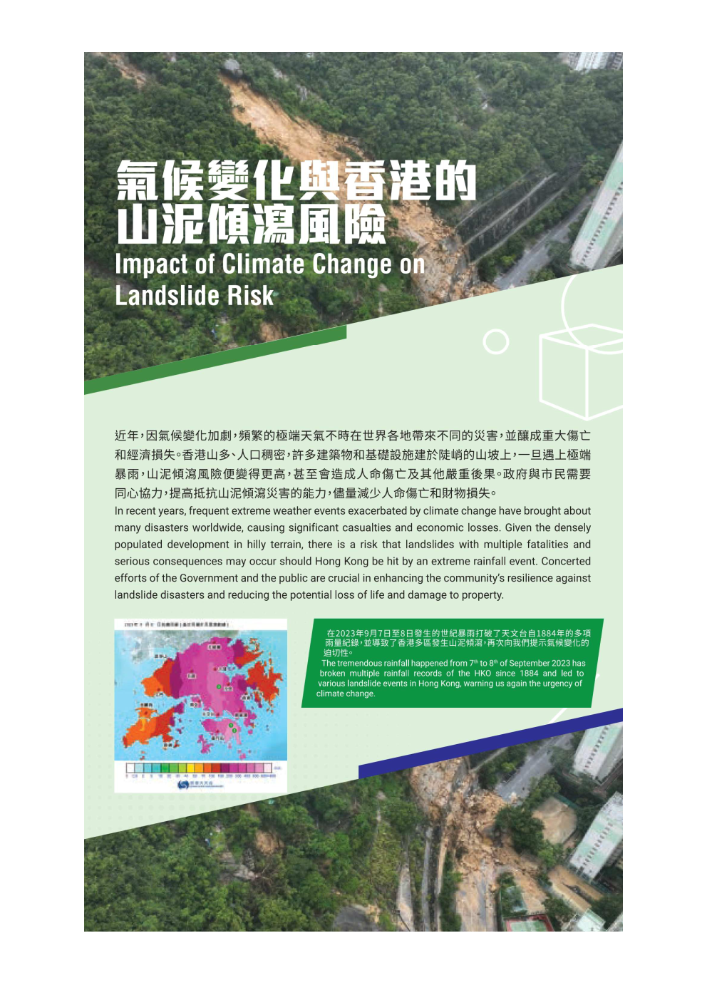
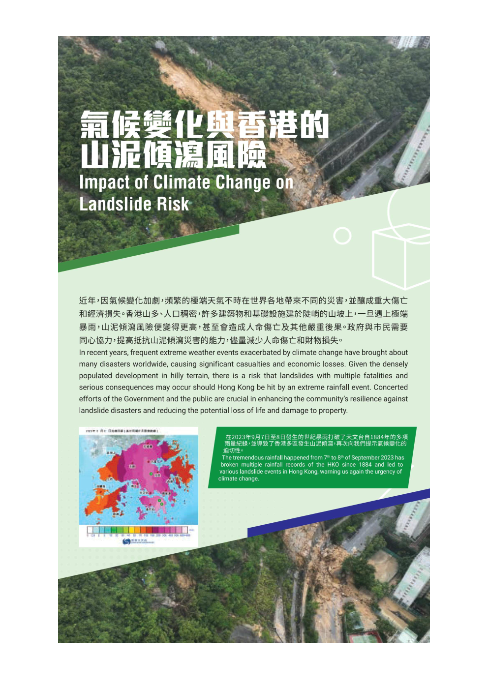

GEO's Booth at the Hong Kong Book Fair 2025
1. Participants who answer five questions correctly will get a chance to try our new Arcade Game!!!!!!
2. This survey will not collect personal email addresses.
3. This website will only be active during the Book Fair 2025.

Results
Panels
 
